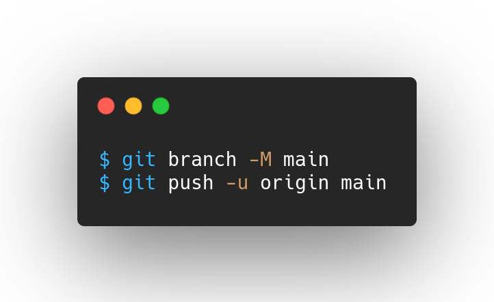

Git.
En este pedazo de blog se puede encontrar informacion de el control de versiones con Git, se debe considerar que es necesario tener instalado el sistema de control en sus computadoras. Linux y MacOS ya cuentan con Git instalado y si eres usuario de Windows, lo puedes descargar desde: Descargar Git
Crear un repositorio nuevo
Agregar los archivos la rama actual
Hacer un commit
Crear una nueva rama de desarrollo y cambiar entre ellas
Subir un repositorio local a uno remoto
Clonar un repositorio remoto en uno local